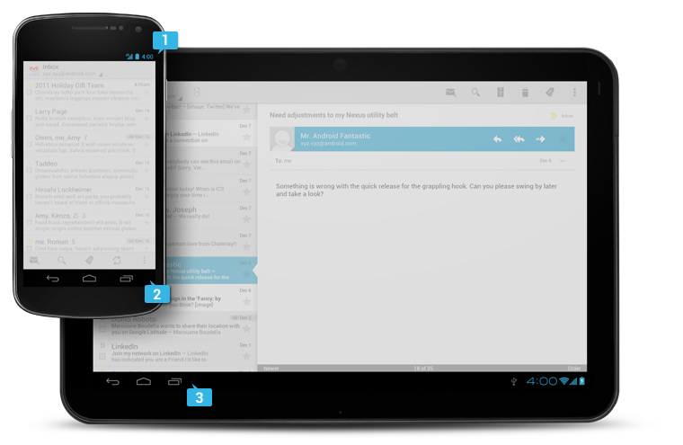

Android's system UI provides the framework on top of which you build your app. Important aspects include the Home screen experience, global device navigation, and notifications.
Your app will play an important part in keeping the overall Android experience consistent and enjoyable to use. At the end of this chapter we introduce the main elements for achieving this goal in your app.
Read on for a quick overview of the most important aspects of the Android user interface.
Home, All Apps, and Recents
Home screen
Home is a customizable space that houses app shortcuts, folders and widgets. Navigate between different home screen panels by swiping left and right.
The Favorites Tray at the bottom always keeps your most important shortcuts and folders in view regardless of which panel is currently showing.
Access the entire collection of apps and widgets by touching the All Apps button at the center of the Favorites Tray.
All apps screen
The All Apps screen lets you browse the entire set of apps and widgets that are installed on your device.
Users can drag an app or widget icon from the All Apps screen and place it in any empty location on any Home screen.

Recents screen
Recents provides an efficient way of switching between recently used applications. It provides a clear navigation path between multiple ongoing tasks.
The Recents button at the right side of the navigation bar displays the apps that the user has interacted with most recently. They are organized in reverse chronological order with the most recently used app at the bottom.
Switch to an app by touching it. Remove an item by swiping left or right.
System Bars
The system bars are screen areas dedicated to the display of notifications, communication of device status, and device navigation. Typically the system bars are displayed concurrently with your app. Apps that display immersive content, such as movies or images, can temporarily hide the system bars to allow the user to enjoy full screen content without distraction.
-
Status Bar
Displays pending notifications on the left and status, such as time, battery level, or signal strength, on the right. Swipe down from the status bar to show notification details.
-
Navigation Bar
New for phones in Android 4.0, the navigation bar is present only on devices that don't have the traditional hardware keys. It houses the device navigation controls Back, Home, and Recents, and also displays a menu for apps written for Android 2.3 or earlier.
-
Combined Bar
On tablet form factors the status and navigation bars are combined into a single bar at the bottom of the screen.
Notifications
Notifications are brief messages that users can access at any time from the status bar. They provide updates, reminders, or information that's important, but not critical enough to warrant interrupting the user. Open the notifications drawer by swiping down on the status bar. Touching a notification opens the associated app. More on Notifications
Most notifications have a one-line title and a one-line message. The recommended layout for a notification includes two lines. If necessary, you can add a third line. Timestamps are optional.
Swiping a notification right or left removes it from the notification drawer.
Common App UI
A typical Android app consists of action bars and the app content area.
-
Main Action Bar
The command and control center for your app. The main action bar includes elements for navigating your app's hierarchy and views, and also surfaces the most important actions.
-
View Control
Allows users to switch between the different views that your app provides. Views typically consist of different arrangements of your data or different functional aspects of your app.
-
Content Area
The space where the content of your app is displayed.
-
Split Action Bar
Split action bars provide a way to distribute actions across additional bars located below the main action bar or at the bottom of the screen. In this example, a split action bar moves important actions that won't fit in the main bar to the bottom.